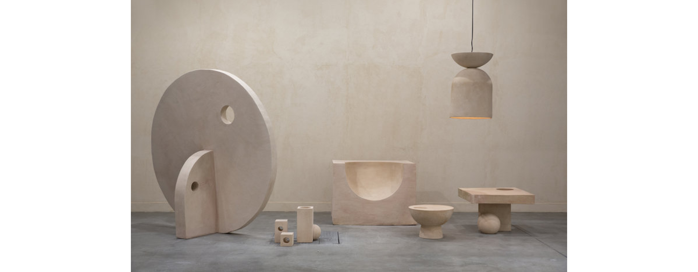
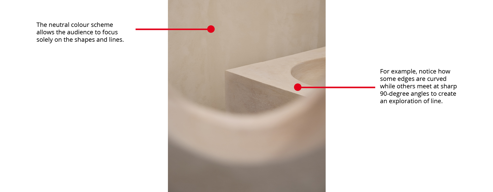
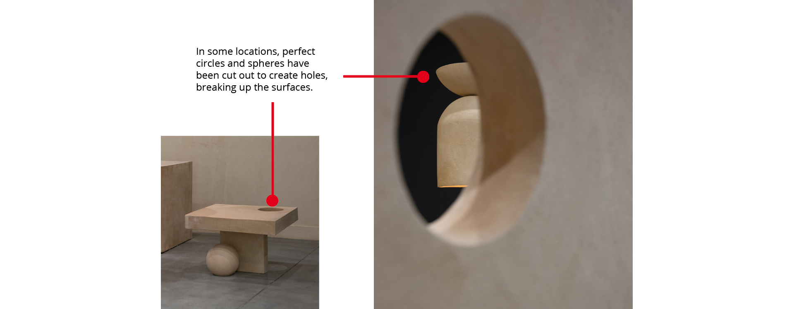
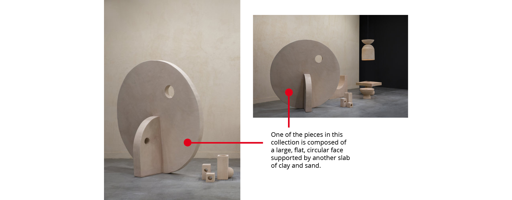
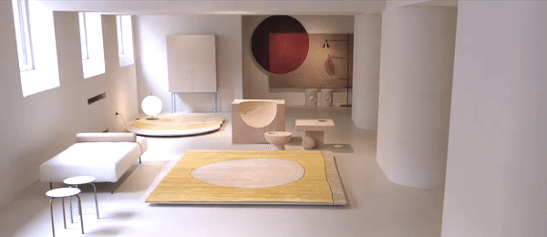

The Circle is an abstract furniture collection where Ossino experiments with geometry and time in everyday living spaces. A set of pieces reminiscent of a living room, the project deviates from a standard armchair and coffee table set.
The Circle seems like it was designed not for human comfort, but rather as a collection of conceptual sculptures. While this collection can be interpreted as cold, hard, and impersonal, its geometric beauty makes it seem like a living space for beings on another plane of existence.
 These holes allow light to shine through and shadows are formed. This play on light further breaks up the smooth texture of the pieces.
The structure is similar to a sundial or even a kitchen timer, alluding to the passing of time. Even the choice of clay and sand as materials, natural elements which weather over time, is an exploration of time through form.
Ossino’s skillful use of geometry and line creates a poetic interpretation of time in The Circle. When combined in a space with other furniture items, pieces from The Circle add a calming structural elegance.
